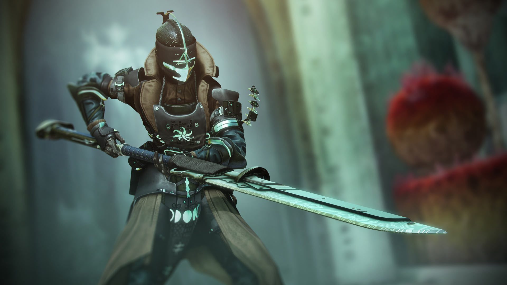

Destiny 2 witchqueen

Sister of Shapes, Sword-Breaker, Witch Queen – which of my many names lives on your lips as you weave your story around me? Even as you tread carefully through my courtyard, among those who worship the Light I have gifted, would you deny me the virtue of this power?
Your answers are telling, Guardian. Ponder them and question those who promise you clarity in the face of all you see here. Listen as their voice wavers. And as you lift your new steel from the heart of your forge, ask yourself, “What force wields you?
avathûn has gifted her soldiers with the powers of the Light. As the Knight you’ve struck down rises from the dead for the second time, a feeling of betrayal washes over you and you can’t help but wonder: When the Light offers no shelter – no solace – where will you turn?
The Relic and the Glaive A new weapon archetype begins its journey at the Relic. Once honed to perfection, master your Glaive to perform powerful melee combos, fire projectiles, and deploy a powerful energy shield.
Craft Your Perfect Roll Master the new crafting system and create custom weaponry with unique combinations of mods, shaders, and advanced stat pools. When fighting a god, leave nothing on the table.
Deze website is gemaakt voor het aanleren van basis HTML en is gebaseerd op een bestaand artikel, aangevuld met eigen teksten. Bron